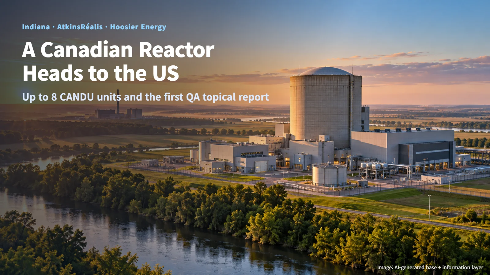
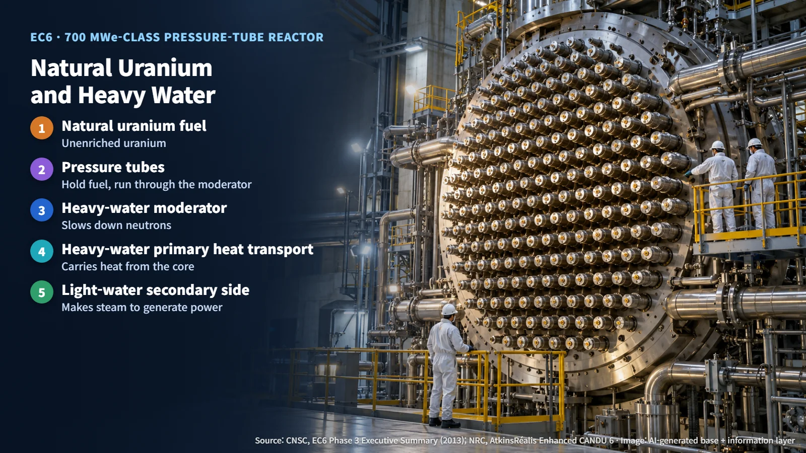
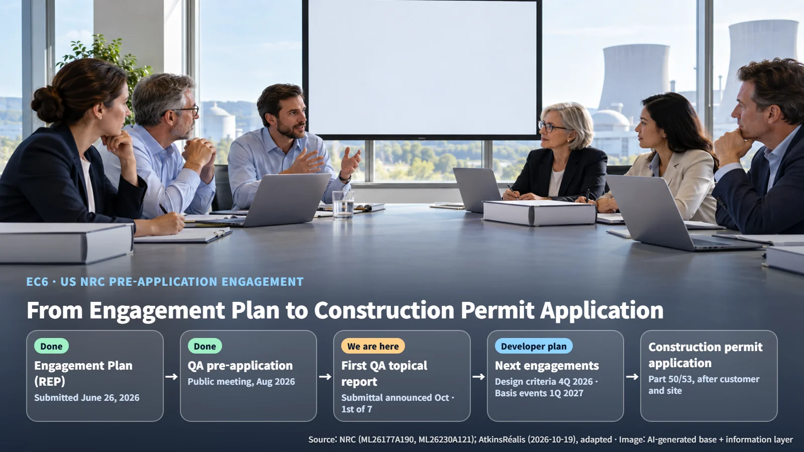

United States · CANDU Licensing
How a Canadian Heavy-Water Reactor Gets to the United States: Indiana's Eight-Unit CANDU Plan and the Quality Assurance Topical Report
AtkinsRéalis is evaluating up to eight CANDU units in Indiana and has submitted the first of seven planned topical reports, on quality assurance, to the US NRC.
If a reactor design has already been reviewed in another country, it is natural to wonder what kind of scrutiny it faces in the United States. In October 2026, the Canadian CANDU reactor reached a new starting point in the state of Indiana. Following this story shows the order in which the US regulator examines a reactor, and why it matters that the first document on the table is a quality assurance report.

An Agreement to Evaluate Up to Eight Units and 6 GW
Canadian company AtkinsRéalis announced on October 19 that it had signed a memorandum of understanding with the State of Indiana and utility Hoosier Energy to evaluate the potential development of up to eight CANDU units, totaling 6.0 GW. The plan is a response to growing electricity demand from manufacturing, data centers and other users.
The evaluation covers site selection, commercial structure and power purchase agreements, workforce, and grid interconnection. It also looks at installing gas turbine generation ahead of the nuclear units, and at converting retired or soon-to-retire power plant sites to gas and nuclear generation. Picture candidate sites spread out on a map, with each condition checked one by one. The project is currently at the feasibility evaluation and pre-application stage, and its schedule will be set by progress on siting, financing, purchase agreements, licensing and environmental review.
CANDU and EC6: Natural Uranium and Heavy Water
The design under review in the United States is the EC6. An evolution of the CANDU 6, it is a 700 MWe-class pressure-tube reactor moderated and cooled by heavy water, and it runs on natural uranium fuel.
A moderator is a material that slows down the fast neutrons released by fission so that they are more likely to cause the next fission. Heavy water is water made with deuterium, a form of hydrogen heavier than the ordinary kind, and it absorbs very few neutrons. That property lets the chain reaction continue using natural, unenriched uranium. Pressure tubes holding the fuel run through the heavy-water moderator, and the primary heat transport system and the moderator both use heavy water, while the secondary side that produces steam uses ordinary (light) water.

The First Gate: A Quality Assurance Topical Report
The US process is moving forward step by step. The Regulatory Engagement Plan (REP), submitted on June 26, describes a plan to apply for a construction permit under Part 50 or Part 53 once a customer and a US site are identified. A public pre-application meeting on quality assurance followed in August, and in October the company said it had submitted to the Nuclear Regulatory Commission (NRC) the quality assurance report, the first of seven planned topical reports.
A topical report is a document that lays out a specific subject in advance so it can be reviewed on its own. This work feeds into the Preliminary Safety Analysis Report (PSAR), the technical basis of a construction permit application, and even for an accepted topical report the NRC confirms project-specific conditions of use in each individual application. The NRC's project description and the developer's materials describe the application path in different terms, and the path will be settled through further engagement.

The Quality Assurance Program Description (QAPD) explains who carries out and verifies which quality activities, and by what procedures. The document number of the formal submittal and the NRC's review results have not yet been made public. Based on the August pre-application materials, the key points are these:
- Design responsibility: The Canadian organization maintains the technical integrity of the design, and the US organization handles implementation and compliance with US regulations. Think of it as naming both the owner of the recipe and the head of the local kitchen.
- Independent quality oversight: It reports directly to the Chief Operating Officer and holds stop-work authority, much like a referee who can blow the whistle during a game.
- Supply chain verification: Quality requirements flow down to sub-tier supply contracts, and when commercially purchased items are used in safety-related applications, the required characteristics and verification evidence are confirmed (commercial grade dedication).
- Separate inspectors: Special processes such as welding, heat treatment and nondestructive examination use qualified procedures and personnel, and inspectors other than the people doing the work check quality at defined hold points.
- Records: Quality records are kept and retrievable as evidence of completed work, and audits and corrective actions confirm that problems are closed out.
This program builds on the 18 criteria of 10 CFR 50 Appendix B and commits to ASME NQA-1-2022 and RG 1.28 Revision 6 as its implementing standards. Interpretations and exceptions are stated for some requirements, and their content will be examined in the NRC review.
Canada's Review Experience and the Next Engagement Steps
Canada's regulator, the CNSC, completed Phase 3 of its pre-project design review in 2013, covering 11 topics. It concluded that there were no fundamental barriers to licensing in Canada, on the condition that the findings be addressed and planned research and development be completed. Follow-up issues at the time included the classification of structures, systems and components (SSCs), the basis for exempting the heavy-water check valves in the emergency core cooling system from the single-failure criterion, the containment leak-rate test pressure, and radiation protection design details.
To draw on that experience in the United States, the project needs a clear mapping between design version, applicable requirements and verification data, which means lining up the design reviewed in Canada against the design submitted in the United States, line by line. The REP lists separate engagement topics: licensing basis events and SSC treatment, codes and standards, accident analysis methods and their validation, source term, and probabilistic risk assessment. On the developer's schedule, the next engagements are principal design criteria in the fourth quarter of 2026 and licensing basis events and SSC treatment in the first quarter of 2027.
When a reactor crosses a border, the records and lines of responsibility that have safeguarded its design travel with it. This quality assurance report is the first document to place those records and that responsibility structure before the US regulator.